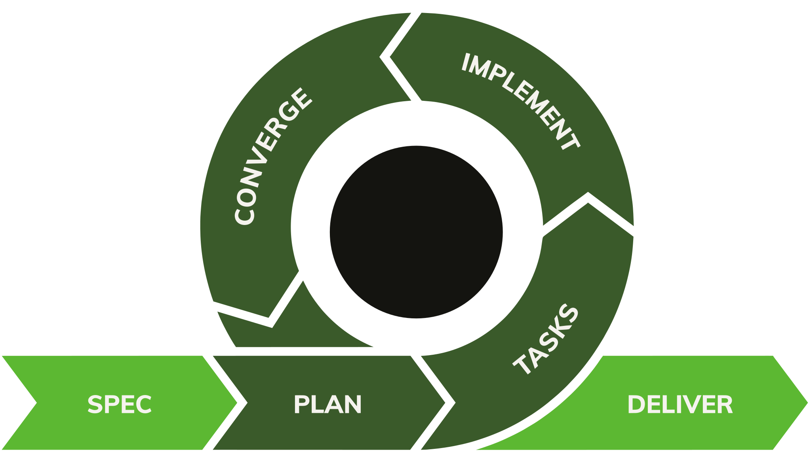
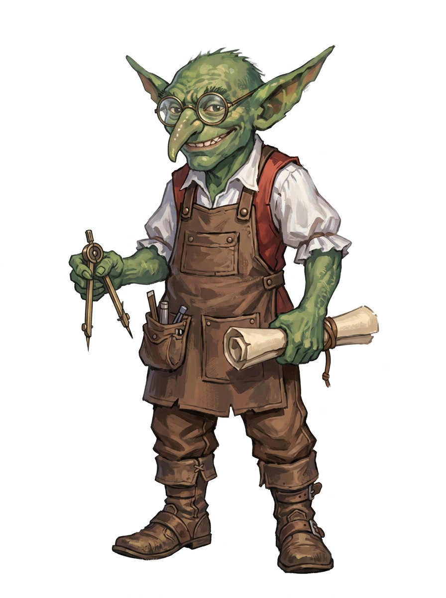

Spec-Driven Development for AI-Assisted Coding
Stop prompting and praying. Start specifying, planning, and building — with a structured loop that converges on quality software in days, not weeks.
How It Works
Every feature starts as a user problem, gets decomposed into testable journeys, and is implemented through red-green cycles. A convergence loop ensures the deliverable matches the spec.


Specify & Plan
Define the problem, not the solution. Capture user journeys in Given/When/Then format, then design the architecture with journey contracts.
Tasks
Break the plan into BDD/TDD phases. Every task starts with a failing test. Every phase ends with a runnable exit command.
Implement & Converge
Build phase by phase through red-green cycles. Then converge: compare the codebase against the spec, find gaps, and loop until done.
Why Spec-Driven?
The opposite of vibe coding
Get Started
Requires Spec Kit >= 0.15.0
# Install Trasgo Spec Kit preset
git clone https://github.com/trasgo-furioso/trasgo-speckit.git .trasgo-speckit
specify preset add --dev .trasgo-speckit/preset/ --priority 1Hire Actual Trasgos
Need a product built, not just coded? 15+ years of product and engineering experience, powered by spec-driven development. We know what to build — not just how.